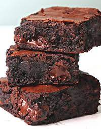

Brownies

Dugo sam tragala za "onim" prekrasnim ljepljivim
čokoladnim tijestom koje bi zadovoljio zahtjevno
nepce i evo ga! Nimalo tajanstveno, vrlo jednostavno
i besprijekorno čokoladno!
Sastoji cokoladna smjesa za 16 komada:
- 100 gr margarina
- 400 gr cokolade
- 4 jaja
- 140 gr secera
- 150 gr brasna
Sastojci za posebne uzitke:
- 150 gr krupno sjeckanih oraha
- 200 gr grozdjica
- rum
- 1 zlicica cimeta
Steps:
- Zagrijati pecnicu na 180*C
- Cijela jaja i secer pjenasto umutiti
- U medjuvremenu na sporetu na srednje jakoj
temperaturi istopiti margarin i cokoladu pa ih dodati u smjesu
jaja, brasna i secera
- Sve dobro promijesati
- Ukoliko zelite "posebne uzitke"
u cokoladnu smjesu umijesajte vase groydjice, orhae i cimet
- Ulijte smjesu u kalup i pecite 25-30min na 180*C
- Pazite da se brownies sa pecenjem ne presuse